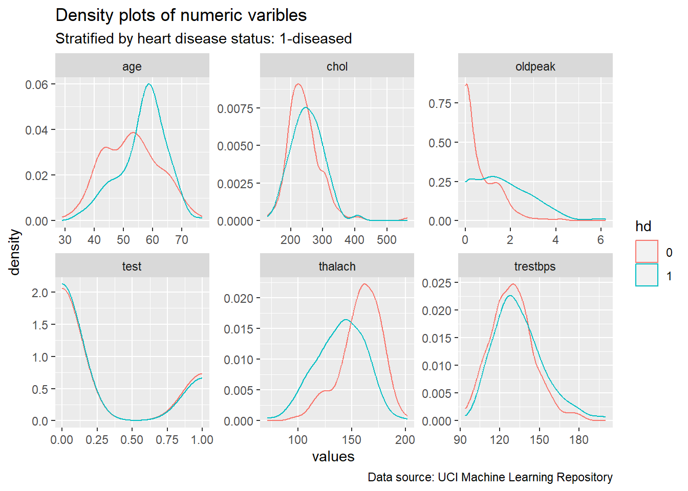
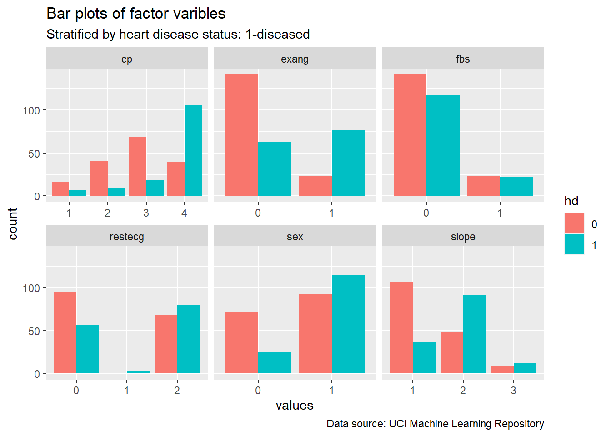
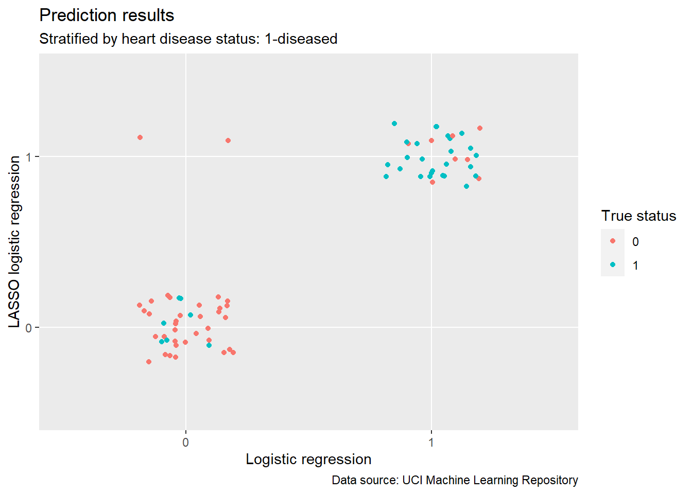

library(tidyverse)
data_raw = read.table("processed.cleveland.data", sep = ",")
data = data_raw %>%
rename(age = V1, sex = V2, cp = V3, trestbps = V4, chol = V5,
fbs = V6, restecg = V7, thalach = V8, exang = V9, oldpeak = V10,
slope = V11, ca = V12, thal = V13, num = V14) %>%
select(-ca, -thal) %>%
mutate(sex = factor(sex),
cp = factor(cp),
fbs = factor(fbs),
restecg = factor(restecg),
exang = factor(exang),
slope = factor(slope),
hd = factor((num > 0)*1)) %>%
select(-num)Example Analysis
Research Background and Data Source
This example analysis focuses on predicting the occurrence of heart disease using data from demographics, physical tests, and medical examinations. We will employ logistic regression with LASSO, evaluate their performances, and find significant predictors.
This analysis aims to help scientists as well as clinicians who try to understand what roles different factors play in predicting heart disease and provide a prediction tool in the real clinical setting.
Data used in this analysis comes from the UCI Machine Learning Repository. Data files and documentation can be accessed here. The whole dataset consists of 4 parts, but this analysis only uses the Cleveland database.
Data Processing
Before analysis, a few steps of data processing are needed. Column names are replaced by meaningful abbreviations and some variables are converted to the factor format according to the documentation.
Caution
Two variables ca and thal contain missing values, and are removed from the dataset for the sake of simplicity. This might cause some trouble, and we may use imputation to fix this in future studies.
set.seed(1630)
n = nrow(data)
data$test = sample(rep(c(0, 1), times = c(round(0.75*n), n-round(0.75*n))))
data_train = filter(data, test == 0) %>% select(-test)
data_test = filter(data, test == 1) %>% select(-test)Descriptive Analysis
Densities and bars are plotted for numeric variables and factor variables, respectively.
Note
Some variables such as age, thalach, cp and exang demonstrate relations to heart disease status.
Show code
data %>%
select(where(is.numeric), hd) %>%
pivot_longer(-hd, names_to = "variables", values_to = "values") %>%
ggplot() +
geom_density(aes(x = values, color = hd), ) +
facet_wrap(variables~., scales = "free") +
labs(title = "Density plots of numeric varibles", subtitle = "Stratified by heart disease status: 1-diseased", caption = "Data source: UCI Machine Learning Repository")
Show code
data %>%
select(where(is.factor)) %>%
pivot_longer(-hd, names_to = "variables", values_to = "values") %>%
ggplot() +
geom_bar(aes(x = values, fill = hd), stat = "count", position = "dodge") +
facet_wrap(variables~., scales = "free_x") +
labs(title = "Bar plots of factor varibles", subtitle = "Stratified by heart disease status: 1-diseased",
caption = "Data source: UCI Machine Learning Repository")
Data Analysis
Logistic regression including all predictors as well as lasso logistic regression are fitted. Cross-validation is used to find the best parameter \(\lambda\) for Lasso.
set.seed(1563)
logi = glm(hd~., data = data_train, family = "binomial")
predict_logi = factor((predict(logi, data_test, type = "response") > 0.5) * 1)library(glmnet)
y = data_train$hd == "1"
X_train = model.matrix(hd~., data = data_train)[,-1]
X_test = model.matrix(hd~., data = data_test)[,-1]
lambda = cv.glmnet(X_train, y, alpha = 1)$lambda.min
logi_lasso = glmnet(X_train, y, family = "binomial", alpha = 1, lambda = lambda)
predict_logi_lasso = factor((predict(logi_lasso, X_test, type = "response") > 0.5) * 1)summary(logi)
Call:
glm(formula = hd ~ ., family = "binomial", data = data_train)
Deviance Residuals:
Min 1Q Median 3Q Max
-2.2602 -0.6431 -0.1926 0.5167 2.3891
Coefficients:
Estimate Std. Error z value Pr(>|z|)
(Intercept) -7.725202 3.208535 -2.408 0.016053 *
age 0.041665 0.025959 1.605 0.108484
sex1 1.936566 0.511034 3.790 0.000151 ***
cp2 1.422578 0.817376 1.740 0.081785 .
cp3 0.489325 0.720488 0.679 0.497038
cp4 2.374920 0.729961 3.253 0.001140 **
trestbps 0.005043 0.011665 0.432 0.665477
chol 0.008781 0.004710 1.864 0.062256 .
fbs1 0.189622 0.567755 0.334 0.738391
restecg1 0.626915 1.600261 0.392 0.695237
restecg2 0.641368 0.387736 1.654 0.098100 .
thalach -0.014026 0.011470 -1.223 0.221382
exang1 0.559909 0.442171 1.266 0.205416
oldpeak 0.705294 0.228179 3.091 0.001995 **
slope2 0.988993 0.459823 2.151 0.031491 *
slope3 -0.654558 1.012168 -0.647 0.517833
---
Signif. codes: 0 '***' 0.001 '**' 0.01 '*' 0.05 '.' 0.1 ' ' 1
(Dispersion parameter for binomial family taken to be 1)
Null deviance: 313.70 on 226 degrees of freedom
Residual deviance: 179.75 on 211 degrees of freedom
AIC: 211.75
Number of Fisher Scoring iterations: 5predict(logi_lasso, X_test, type = "coefficient")16 x 1 sparse Matrix of class "dgCMatrix"
s0
(Intercept) -3.666945730
age 0.025940551
sex1 1.194600748
cp2 .
cp3 -0.101590294
cp4 1.290922145
trestbps .
chol 0.004610698
fbs1 .
restecg1 .
restecg2 0.313835657
thalach -0.010740660
exang1 0.434325068
oldpeak 0.437614473
slope2 0.811598169
slope3 . Show code
accuracy_logi = mean(predict_logi == data_test$hd)
accuracy_logi_lasso = mean(predict_logi_lasso == data_test$hd)
sensitivity_logi = mean(predict_logi[data_test$hd == "1"] == data_test$hd[data_test$hd == "1"])
sensitivity_logi_lasso = mean(predict_logi_lasso[data_test$hd == "1"] == data_test$hd[data_test$hd == "1"])
specificity_logi = mean(predict_logi[data_test$hd == "0"] == data_test$hd[data_test$hd == "0"])
specificity_logi_lasso = mean(predict_logi_lasso[data_test$hd == "0"] == data_test$hd[data_test$hd == "0"])
result = matrix(c(accuracy_logi, sensitivity_logi, specificity_logi,
accuracy_logi_lasso, sensitivity_logi_lasso, specificity_logi_lasso), c(3,2))
rownames(result) = c("Accuracy", "Sensitivity", "Specificity")
colnames(result) = c("Logistic regression", "LASSO logistic regression")
knitr::kable(
round(result, 4)
)| Logistic regression | LASSO logistic regression | |
|---|---|---|
| Accuracy | 0.8026 | 0.7763 |
| Sensitivity | 0.7879 | 0.7879 |
| Specificity | 0.8140 | 0.7674 |
Show code
data.frame(logtistic = predict_logi,
logtistic_lasso = predict_logi_lasso,
test = data_test$hd) %>%
ggplot() +
geom_jitter(aes(x = logtistic, y = logtistic_lasso, color = test), width = 0.2, height = 0.2) +
labs(x = "Logistic regression", y = "LASSO logistic regression", color = "True status",
title = "Prediction results", subtitle = "Stratified by heart disease status: 1-diseased",
caption = "Data source: UCI Machine Learning Repository")
Conclusion
As predictive models logistic regression and LASSO logistic regression perform fairly well. Logistic regression has slightly better performance in terms of accuracy (80.26% vs 77.63%) and specificity (81.40% vs 76.74%). The two models agree on all but two sample’s prediction results. As for important predictive factors, sex, cp(chest pain), oldpeak (ST depression induced by exercise relative to rest), and slope (slope of the peak exercise ST segment) show significant results. Male patients with asymptomatic chest pain and have a flat slope of the peak exercise ST segment are more likely to have heart disease. Scientists could look out for mechanisms under the surface and clinicians might want to give extra attention to such patients.
Functions Used
tidyverse: rename, select, mutate, filter and pivot_longer.
ggplot: geom_density, geom_bar and geom_jitter.
Reference
Tibshirani (2013) Steinbrunn (1989) Heart Disease (1988)
Heart Disease. 1988. UCI Machine Learning Repository. https://archive.ics.uci.edu/dataset/45/heart+disease.
Steinbrunn, R. Detrano，A. Jánosi，W. 1989. “International Application of a New Probability Algorithm for the Diagnosis of Coronary Artery Disease.” American Journal of Cardiology.
Tibshirani, Gareth James，Daniela Witten，Trevor Hastie，Robert. 2013. An Introduction to Statistical Learning with Applications in r. Springer.